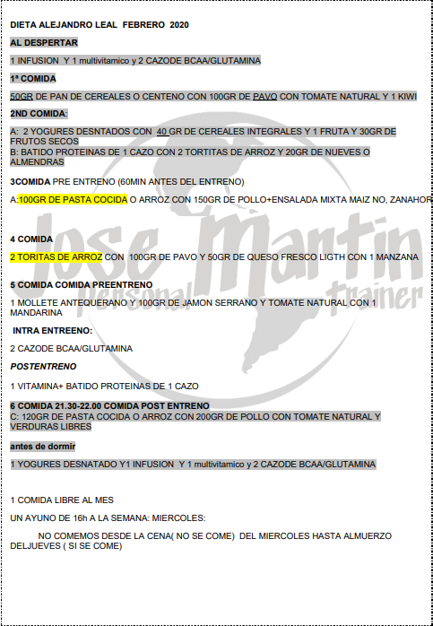

Si llevas cierto tiempo en el ámbito del fitness y la musculación seguramente habrá llegado hasta tus oídos la palabra “volumen”. Un término que va más allá de determinar la cantidad de ejercicio físico y que también se utiliza para hacer mención a un periodo de ganancia muscular.
La fase de volumen en el gimnasio significa precisamente esto. Un intervalo de tiempo en el que nuestros objetivos irán encaminados a ganar musculo.

Una dieta de definición muscular está basada en reducir el nivel de grasa corporal y acompañarlo de ejercicios para tonificar y definir el cuerpo. Hay que tener presente que obtendremos mejores resultados si acompañamos este plan dietético con deporte, tanto cardio como ejercicios anaeróbicos.